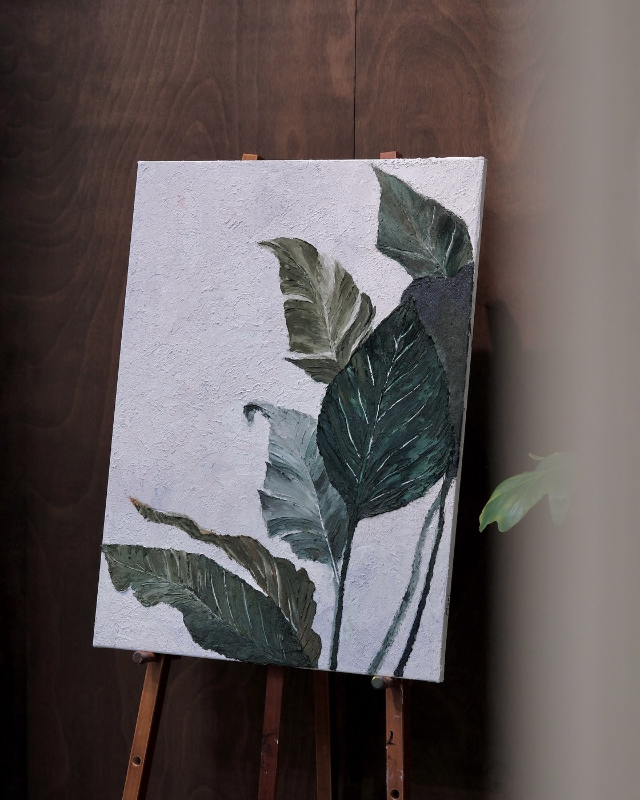
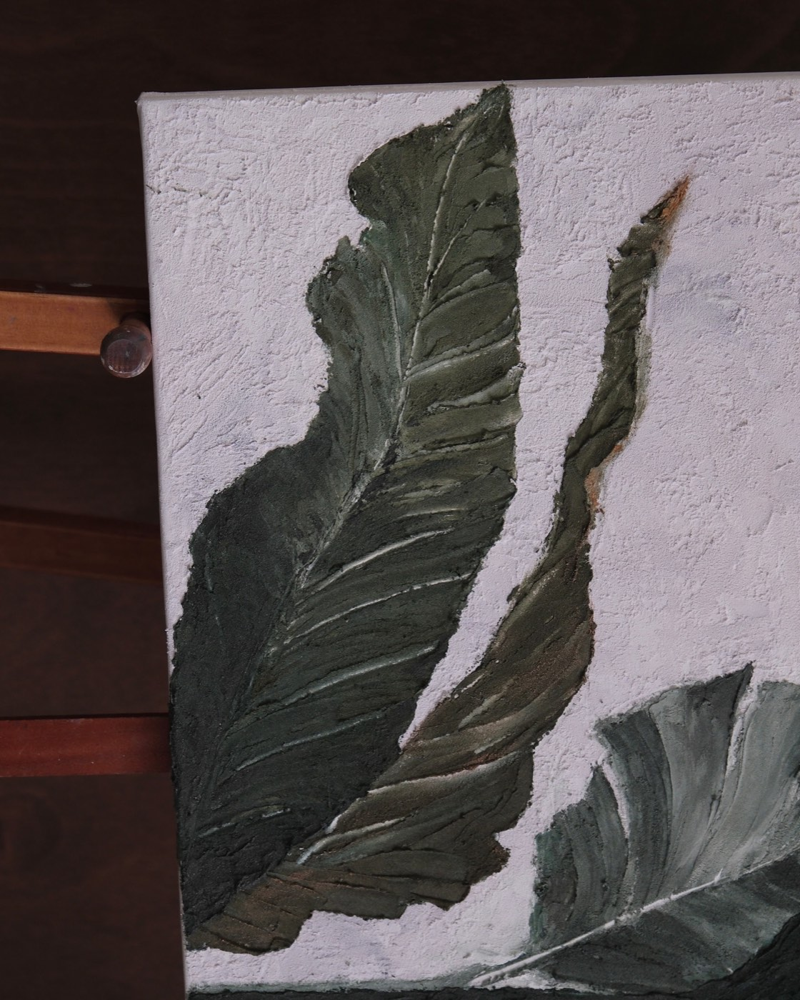
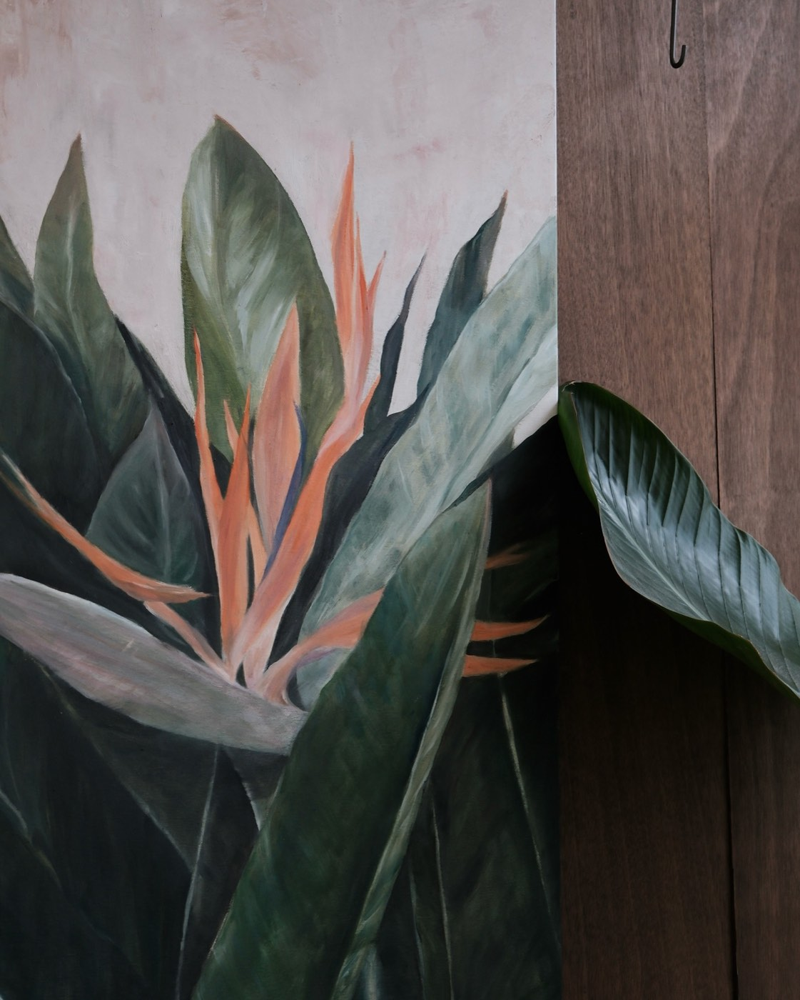
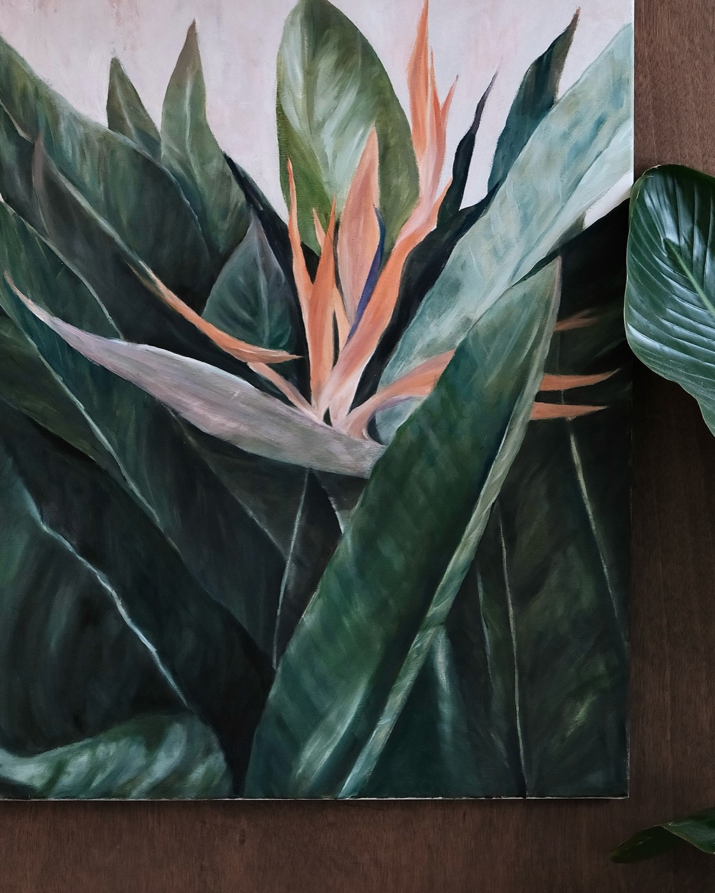
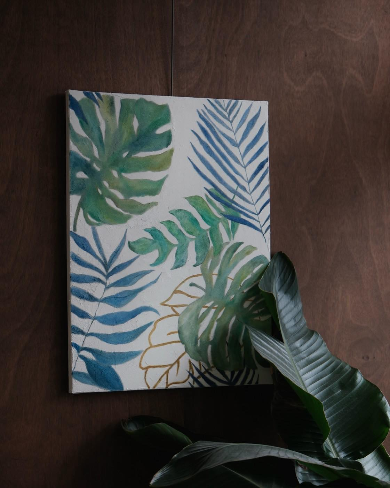
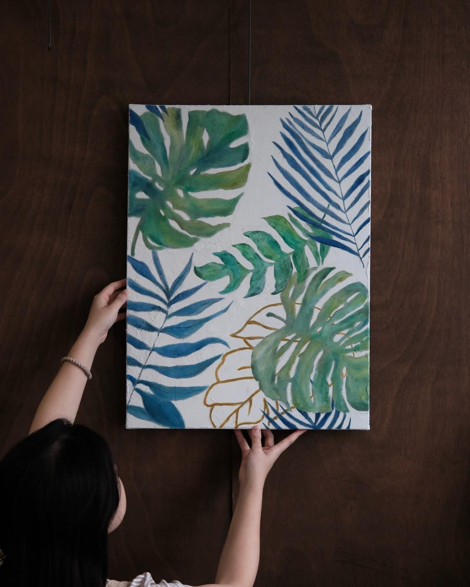
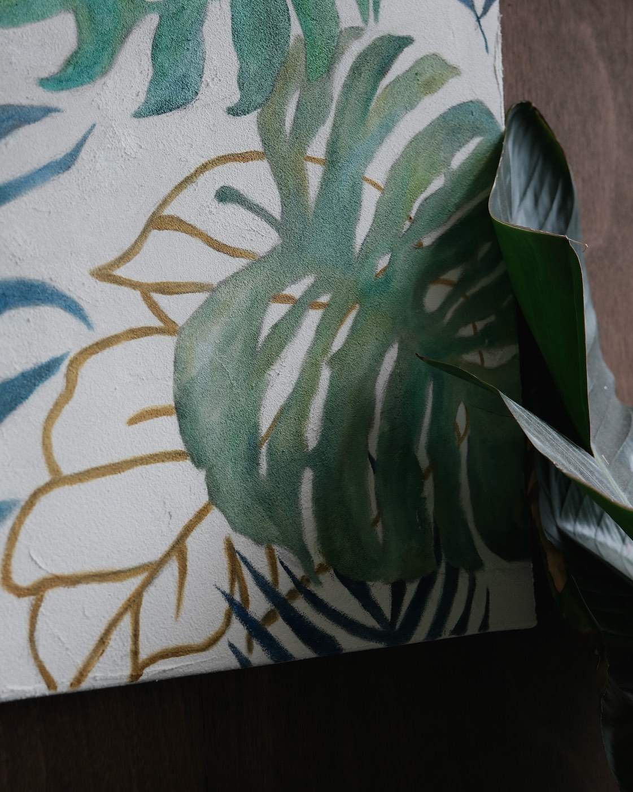
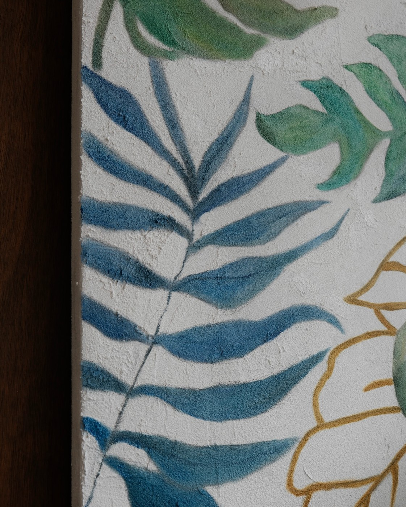
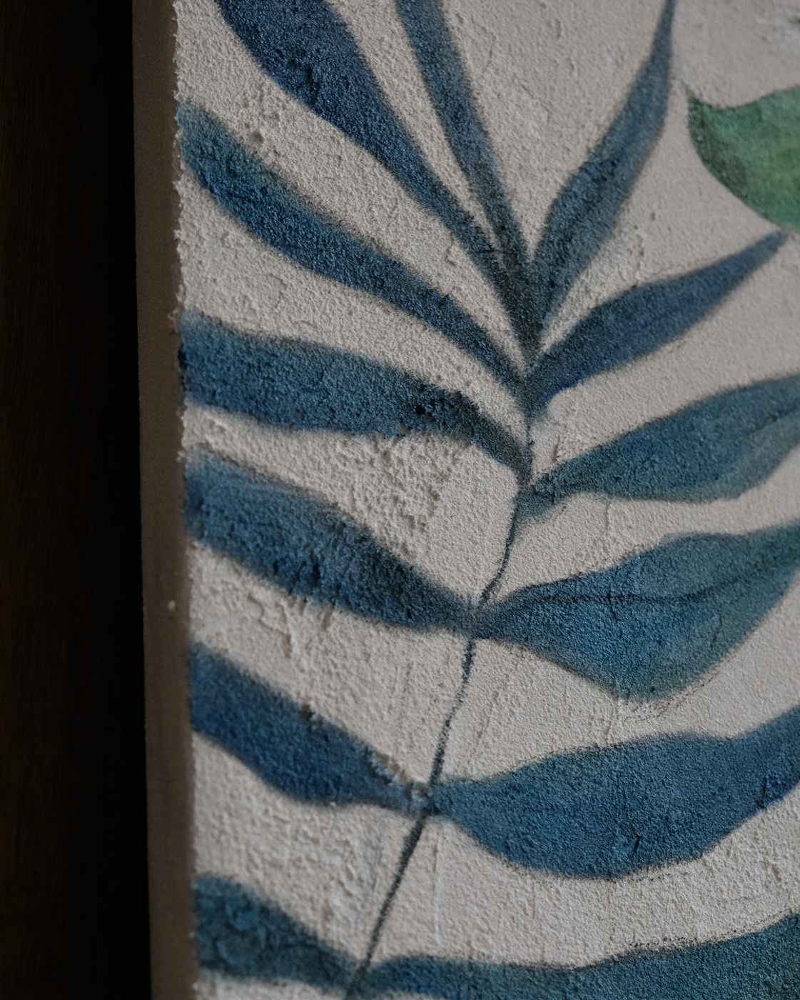
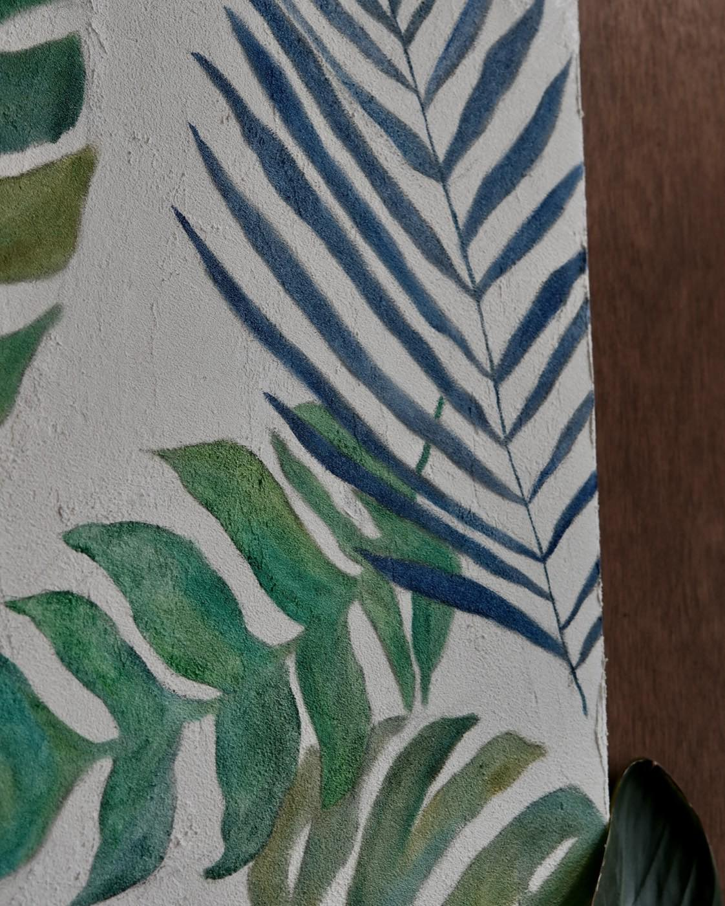

大幅畫布訂製，三種材料的呈現
大幅畫布訂製沒有限定只能用一種材料，這裡整理三件真實訂製作品，剛好都是植物題材，分別用石英砂肌理、油畫＋筆刷、石英砂打底＋油畫三種做法完成，讓你先感受質感差異，再決定想怎麼訂製。如果還沒想好要用哪種材料，都可以先傳想畫的圖片給我們評估。


石英砂肌理
石英砂＋壓克力是畫室目前最常用的肌理畫材料組合，主要用刮刀堆疊出顆粒立體感，細節再借用筆刷輔助完成，適合色塊比較單一、乾淨的圖片。
可以藉由砂子跟顏料的比例調整凹凸厚度，喜歡摸起來有明顯粗糙觸感的同學會特別適合這種做法。
全水性材料乾燥快，可以在同一堂課的尾聲直接貼上金箔或銀箔收尾，當天就能把整幅畫完成。



油畫＋筆刷
用筆刷處理，漸層跟細節都能畫得更精緻。這幅天堂鳥花的背景先用筆刷打底，再用刮刀堆疊些許肌理，製造斑駁的牆面質感，讓單色背景不會太單調。
新手選植物題材時，建議挑單片、生長方向一致的葉型，過程比較不容易畫到挫折；天堂鳥葉片面積大、生長方向統一，是很適合入門的選擇。
這幅作品實際花了 3 堂課完成。油畫顏料乾燥比石英砂慢很多，沒辦法當天貼箔完成，實際要上幾堂課、畫布怎麼安排晾乾，會依圖案複雜度跟尺寸評估，不是固定規則，建議先傳圖片討論。






石英砂打底＋油畫
顏料加入石英砂之後會變得比較乾燥，可以做出凹凸不平的肌理紋路；壓克力快乾的特性，也很適合需要在短時間內堆疊出多層次效果的畫面。
當想同時保留肌理感、又希望圖面細緻一點，會選擇壓克力＋石英砂打底，再用油畫顏料描繪細節——刮刀負責肌理質感，筆刷負責銳利的線條與顏色交替，兩種材料的優點會同時保留在同一幅畫裡。
怎麼選材料大多是依照參考圖判斷：圖片細節豐富、色彩過渡多，會建議用筆刷完成，成品比較平面精緻；肌理畫用刮刀沒辦法畫細部，比較適合大色塊、漸層為主的圖片。